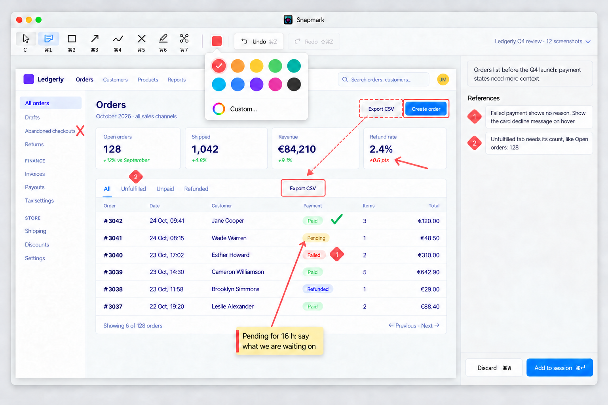
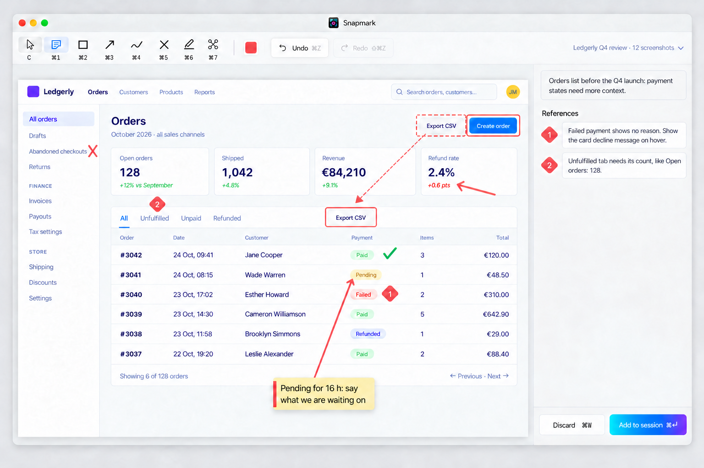
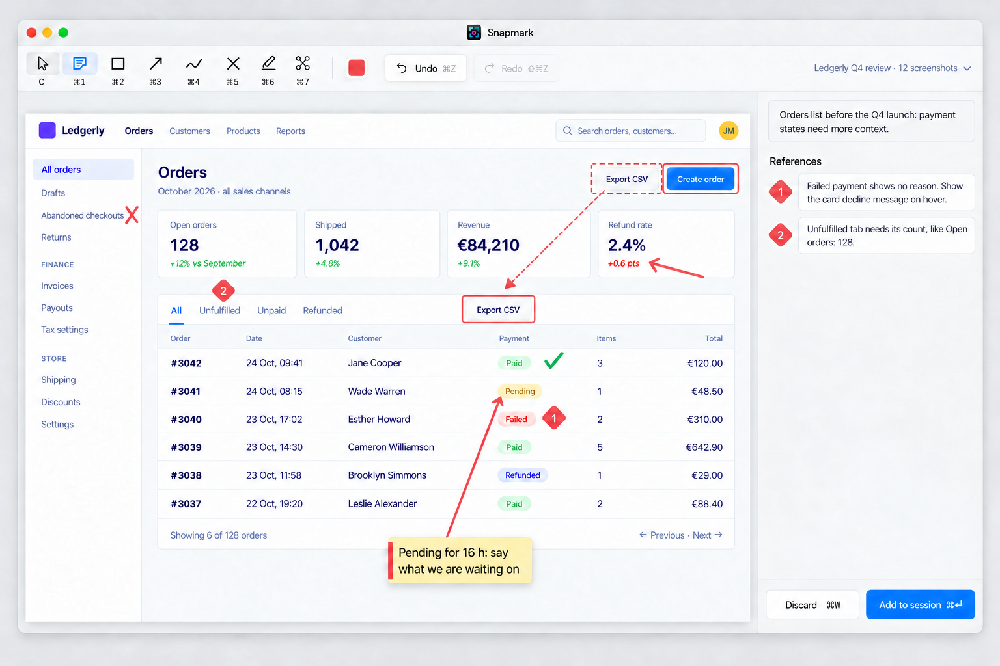
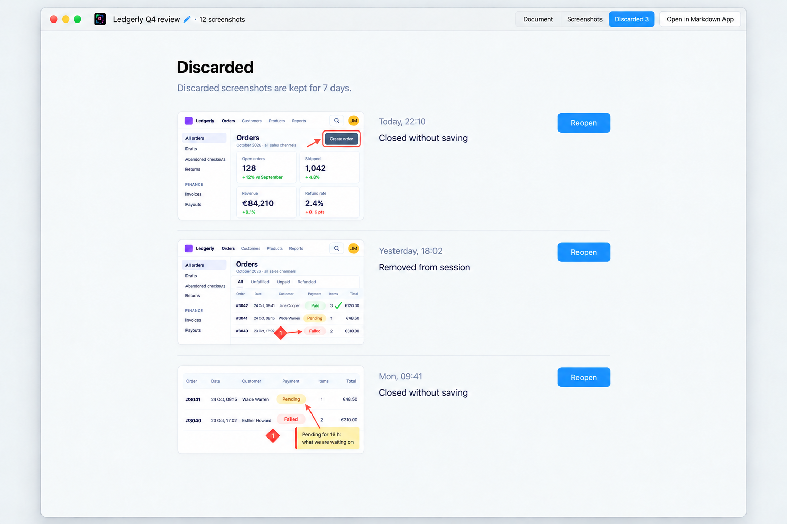
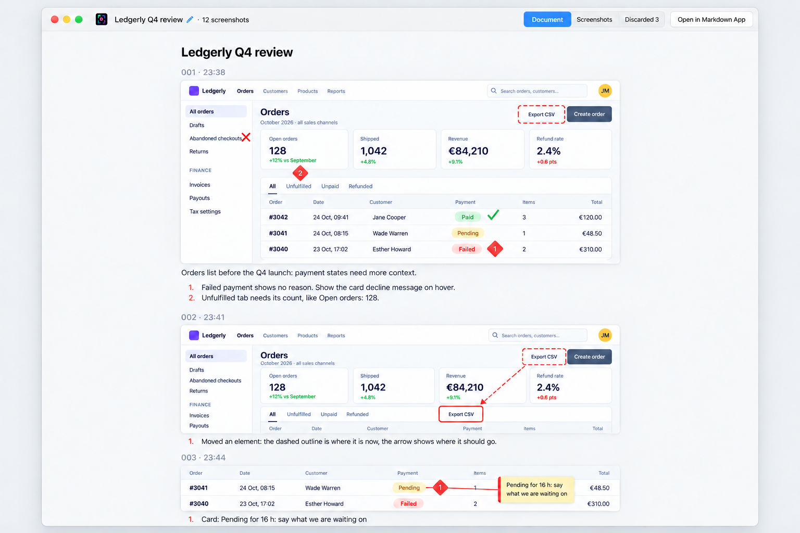
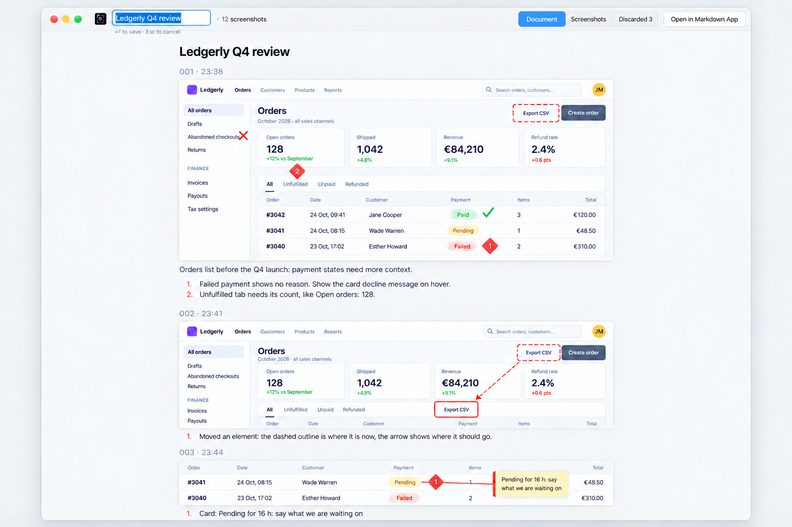
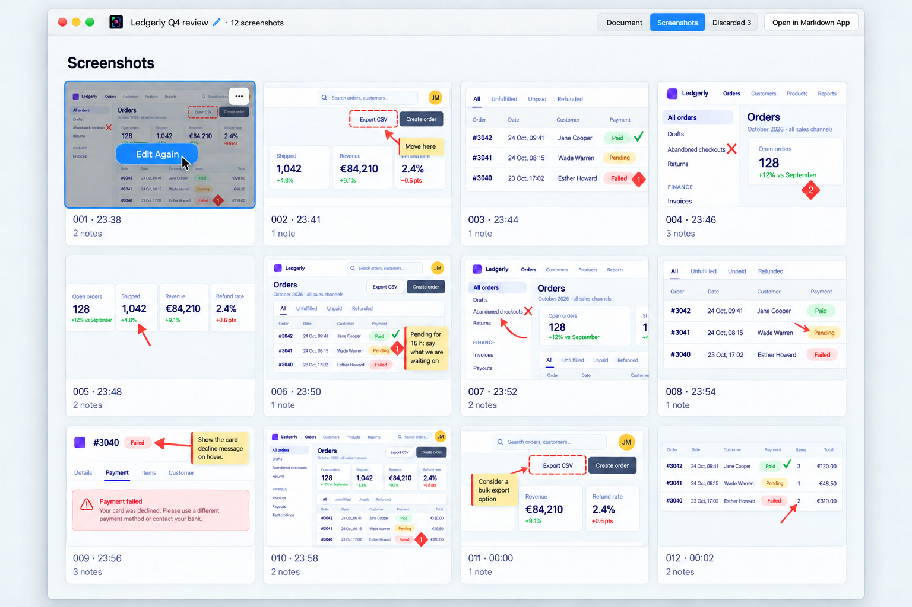

# Snapmark: Native, round 2 The owner picked **Native** ("I think I most like the native version") and asked for these
changes (2026-10-25): 1. **Marks are red again, not blue.** "With red, it's very clear that's feedback … red is a
signal colour." The red is darker and more coral, like the Branded mockup's red: **coral red #E5484D**, the default mark
colour and the remove colour. 2. **A palette of 10 preset colours plus a custom colour picker:** coral red #E5484D (default, remove)
· orange #F76B15 · amber #FFB224 · green #30A46C (approve) · teal #12A594 · cyan #05A2C2 · blue #2492FF · violet #8B3DFF · pink
#EF28A7 · graphite #2C2C31, then a "+" custom swatch (rainbow ring) that opens the macOS colour panel. 3. **See how many
screenshots I took:** the count is visible in the editor and the session window. 4. **Go through discarded screenshots:** the
session window gets a Discarded tab (kept 7 days, Reopen). 5. **Go back to screenshots I already annotated:** the Screenshots tab is
a grid of the session's annotated screenshots with Edit Again. 6. **Rename a session from the screen:** click the session title
to rename it in place. Each folder is one window: the editor, and the session window. In each, every image after the first is an
edit of the first, so they read as one product.
01 Editor
Open live: —
Kept the approved light native macOS editor and Ledgerly content, coral feedback marks, diamond markers, reference badges and
toolbar swatch, the green approve tick, and “Ledgerly Q4 review · 12 screenshots” with a chevron. The colour-palette mockup
opens the two-row colour palette with coral selected and a rainbow-ring Custom… option.

editor--colour-palette

editor--in-use-gradient

editor--in-use
02 Session window
Open live: —
Keep the approved Native appearance: a light macOS window, SF Pro, quiet greys, and an 820px document column.

session--discarded

session--document

session--rename

session--screenshots
Paste it back into the conversation to steer the next round.